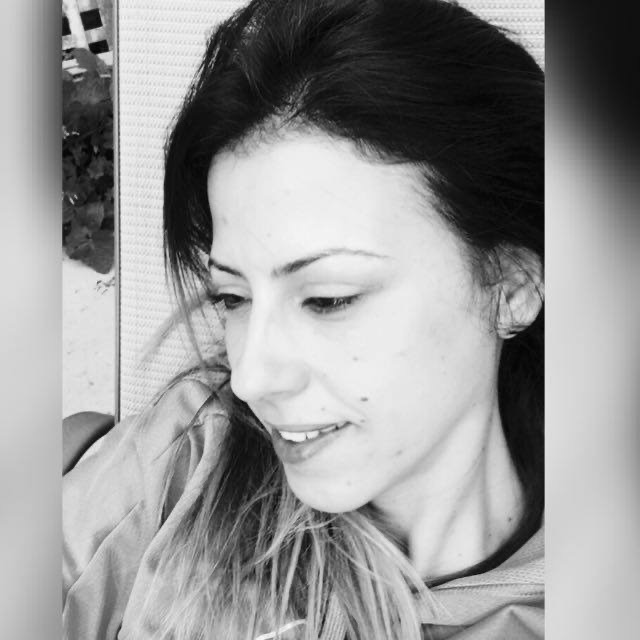

MEYTAL SHITRIT

About Me
My name is Meytal Shitrit, and I currently live in Rishon Le Zion, ISRAEL.
If I have to describe myself, I would probably say i'm a colorful person.
Since I remember my self, I'v always been in a learning position-  ,
,
and thanks to that, I get to experience many things....
Hobbies & Interests
- Traveling
- Jewish studies and Kabbalah
- Reading the news over morning coffee
- Playing with my beautiful Siberian husky
- Surfing
Experience
Production and Artistic manager
As finishing acting school, along with my acting roles,
I started working also as a producer at one of the biggest production company called -
Misgav-Ori Production ,
which specializes in children's entertainment shows,
and done already more than 150 shows , starring the greatest children artists in Israel.
My role in the company was very braod and varied, from the logistic part to the creative part.
One of my projects (production and fully choreography - by me) -
Rhythmic Gymnastics Trainer
It all started when I came one day to visit my friend, Yulia, at work .
Introduction - Yulia and I have known each other for many years,
since we performed together at the Israeli National Theater - "HABIMA" .
While I was turning my career into the production business,
Yulia has opened and managed the Rhythmic Gymnastics club in Beer-Yaakov.
After watching the girls practice it took me only 5 min'
to be convinced to come and train with her.
I did have a background in dance, but not in R.Gymnastics,
so I spent the summer months sitting and studying the FIG Rhythmic Gymnastics rules.
The club dream team - MACABI BEER-YAAKOV -
YU ME
At 2019,while I was still training (and along with my other love for fashion),
Yulia and I started a new brand called YU ME - Fashion for Rhythmic Gymnastics.
The global training outfit code is mostly black,
however , no one said anything about borring or flat...
So we accepted the challange and 5 months later...
we launched our first summer collection.
One of our biggest achievements was to design and produce the outfit
of the Israely team in Acrobatics ,for the European Championship,
back in october 2019.
I truly think that beyond the lovely designs
and the uncompromising good quality of the clothes,
what made us so special,
was the fact that we produced everythig "blue and white" 
Proud to present our first collection -